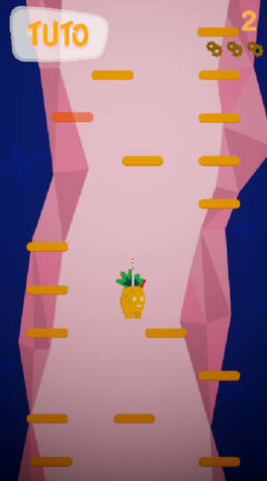
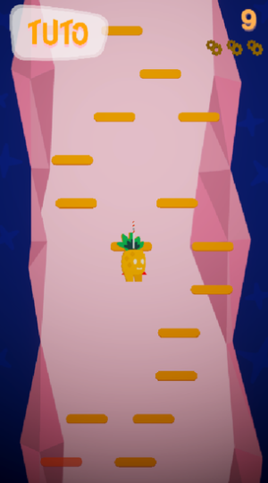
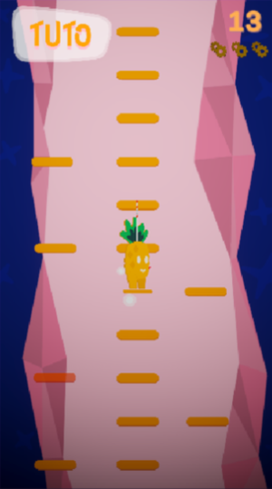
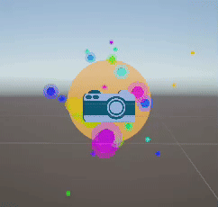
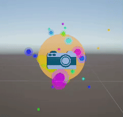

Projet professionnel réalisé en 3ème année. C'est un clone de Doodle Jump, qui sert de vitirine aux activités et ateliers de l'événement Stereogame du Stereolux, notre client.
La demande du client était de faire un jeu qui servirait à présenter et introduire l'évenement et son programme. Le public étant très diversifié,
on a décidé de partir sur un jeu simple, classique et qui se démarquerait grâce à sa DA. On a donc itéré pour obtenir un personnage et un background
qui font référence au bâtiment du Stereolux et des powers ups et ennemis qui représentent les activités et ateliers de l'événement.
Bien qu'il n'ait pas été retenu comme choix final, le projet a été salué par le client pour sa qualité et son professionnalisme, ainsi que son respect
du brief. Ce projet a été une excellente expérience professionelle et m'a permis de travailler sous des nouvelles contraintes,
notamment celle d'avoir un cahier des charges à respecter.
Mon rôle
Etant donné que le projet était assez peu développé côté technique, mon rôle de Lead Developper était principalement de faire l'architecture du code et
de donner des tâches à faire aux autres développeurs. J'étais également présent quand ils avaient des questions ou des problèmes à résoudre, tout en
travaillant sur mes propres tâches en parallèle.



Génération du niveau
De par la simplicité du gameplay et de l'aspect technique, j'ai cherché à rendre intéressante la génération procédurale des plateformes. Pour cela,
j'ai implémenté un système de "zones" similaires à des biomes qui changent les éléments générés en fonction du score du joueur.
J'ai ausssi créé un système de presets, qui permet à n'importe qui de changer facilement les paramètres de génération à travers diverses options :
Types des plateformes, powers ups et ennemis
Probabilités pour chaque élément de spawn par rapport aux autres
Distance entre les éléments
Position de base des éléments
Facteur d'influence de la position de base des éléments
VFXs
En tant que Tech Artist du projet, j'ai eu pour tâches de créer et d'implémenter les VFXs et autres feedbacks du jeu. Parmi ceux-ci, on peut compter :
VFX d'atterrissage du joueur
VFX de disparition des plateformes
VFX des collectibles des powers ups
VFX des jetpacks
Traits de vitesse sur les côtés pendant le jetpack
Effet post process de flash d'appareil photo / shader de neige télévisuelle
Feedbacks plus légers du joueur (cape, léger tilt quand il bouge...)


 5 personnes
5 personnes
 1 mois
1 mois
 Unity (C#)
Unity (C#)

 
